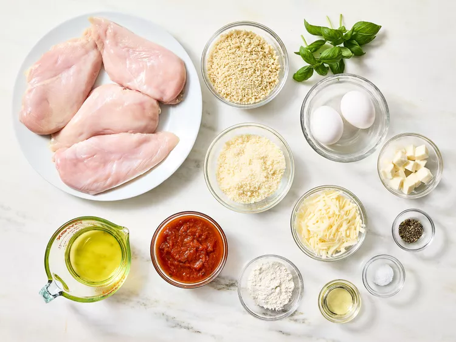
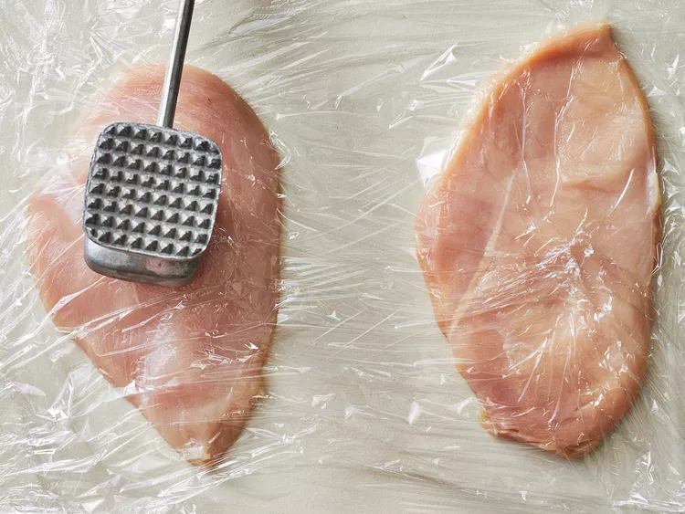
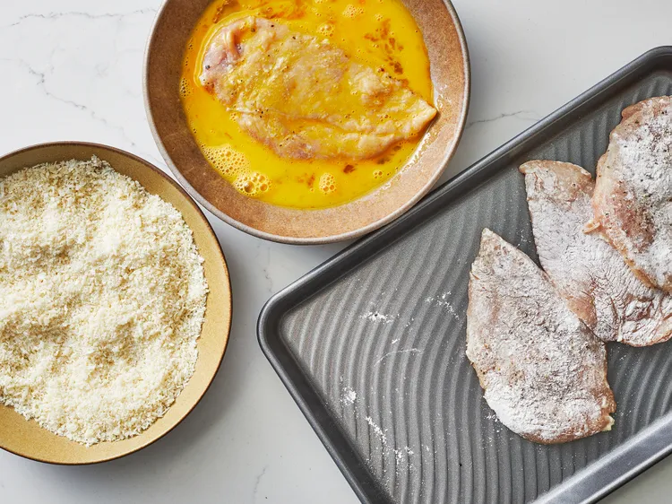
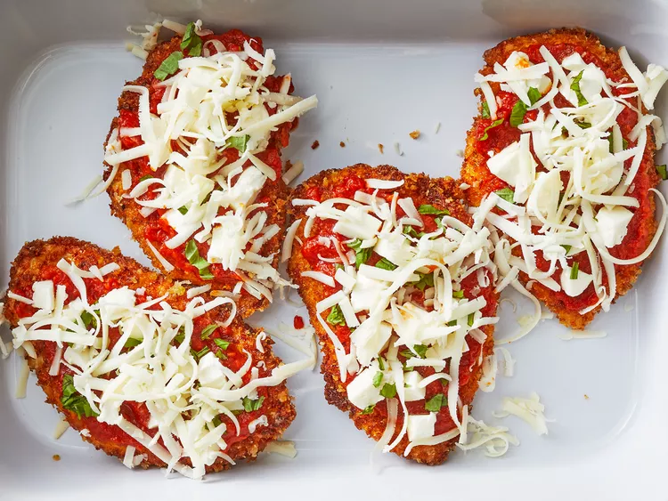

Home
Chicken Parmesan

Description
Chicken Parmesan is no doubt the most popular non-pasta dish in Italian-American style restaurants. And while this delicious meal may seem fancy, it's actually pretty easy to make at home.
In fact, chicken Parmesan is one of those meals that's often best made in your own kitchen. The main problem I have with most versions of Chicken Parmesan served in restaurants is that they drown the chicken in so much sauce and cheese that it ends up being a big soggy clump of chicken and cheese. But it doesn't have to be that way, not with this method.
Unlike many restaurant preparations, this method doesn't overwhelm the chicken with sauce and cheese. The key to great non-soggy chicken Parmesan? Don't put any sauce under the chicken cutlets, just a little bit of sauce on top, so the breading stays relatively crisp. If you like a lot of sauce on your chicken Parmesan, that's fine, you can always serve extra sauce on the side. I also use some actual Parmesan cheese in this recipe! Curiously, most versions of chicken Parmesan only use mozzarella. Here, I'm going with a delicious mixture of fresh mozzarella, tangy Provolone and real Parmesan.
Another little trick I employ here is to add some grated Parmesan to the panko bread crumbs, which adds another layer of flavor. You'll fry the bread crumb and Parmesan crusted chicken breasts just to golden brown before transferring them to a baking pan and adding sauce (but not too much!), cheese, and herbs. Okay, now let's break it down.
Chef John's Top Tips for Making Chicken Parmesan
Before we get to the recipe, here's your cheat sheet for making the best baked chicken Parmesan:
- Pound chicken evenly: Pound the boneless chicken breasts out to an even thickness so they cook evenly. Basically, you're pounding the thick part down to the size of the thin part, about a 1/2-inch thick.
- Don't skimp on seasoning: Salt and pepper the chicken well. Then don't bother with salting the flour and bread crumbs.
- Add Parmesan to the bread crumbs: Use panko bread crumbs mixed with a little finely grated Parmesan cheese. When you fry the breaded chicken, the Parmesan will give it an extra crunch and boost the flavor.
- Rest before cooking: Before frying, let the breaded chicken sit on the counter for about 15 minutes. This helps the coating to adhere to the chicken breast.
- Less sauce, better texture: This is key—Don't drown the poor breaded and fried chicken in sauce and smother it in cheese. Too much of a good thing is too much. You did all the work creating a crisp coating, why make it soggy with too much sauce and cheese?
- Make sure your oven is hot, hot, hot: Be sure your oven is completely preheated to 450 degrees F (230 degrees C). You'll want the cheese to brown slightly and the breading to crisp up before the chicken gets overcooked, and a nice hot oven is the way to go.
Ingredients
- 4 skinless, boneless chicken breast halves
- Salt and freshly ground black pepper to taste
- 2 large eggs
- 1 cup panko bread crumbs or more as needed
- 3/4 cup freshly grated Parmesan cheese, divided
- 2 tablespoons all-purpose flour, or more if needed
- 1/2 cup olive oil for frying, or as needed
- 1/2 cup prepared tomato sauce
- 1/4 cup fresh mozzarella, cut into small cubes
- 1/4 cup chopped fresh basil
- 1/2 cup freshly grated provolone cheese
- 2 teaspoons olive oil
Steps
- Gather the ingredients. Preheat the oven to 450 degrees F (230 degrees C).

- Place chicken breasts between two sheets of heavy plastic (resealable freezer bags work well) on a solid, level surface. Firmly pound chicken with the smooth side of a meat mallet to a thickness of 1/2-inch.

- Season chicken thoroughly with salt and pepper. Using a sifter or strainer, sprinkle flour over chicken breasts, evenly coating both sides.

- Beat eggs in a shallow bowl and set aside. Mix bread crumbs and 1/2 cup Parmesan cheese in a separate bowl, set aside. Dip a flour-coated chicken breast in beaten eggs. Transfer breast to the bread crumb mixture, pressing crumbs into both sides. Repeat for each breast. Let chicken rest for 10 to 15 minutes.

- Heat 1/2 inch of olive oil in a large skillet over medium-high heat until it begins to shimmer. Cook chicken in batches, so you do not overcrowd the pan, until golden, about 2 minutes per side. The chicken will finish cooking in the oven.

- Transfer chicken to a baking dish. Top each breast with 2 tablespoons tomato sauce. Layer each chicken breast with equal amounts of mozzarella cheese, fresh basil, and provolone cheese. Sprinkle remaining Parmesan over top and drizzle each with 1/2 teaspoon olive oil.

- Bake in the preheated oven until cheese is browned and bubbly and chicken breasts are no longer pink in the center, 15 to 20 minutes. An instant-read thermometer inserted into the center should read at least 165 degrees F (74 degrees C). Let chicken rest briefly before serving.